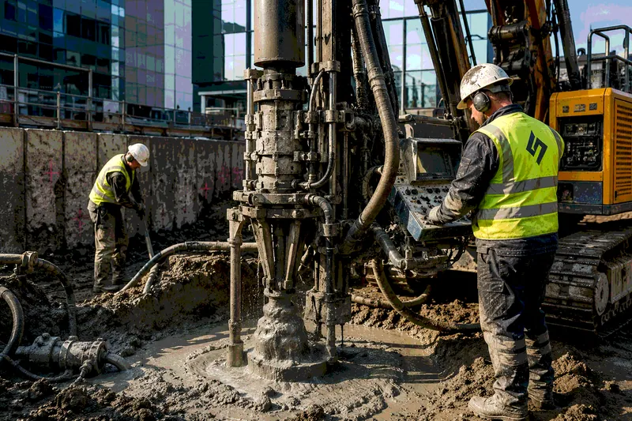

Jet Grouting / Струйная цементация
Создаём высокопрочные грунтоцементные массивы, противофильтрационные завесы, экраны и грунтоцементные сваи прямо в грунте - без выемки и замены. Работает как при новом строительстве, так и под существующими зданиями без их демонтажа.